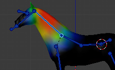
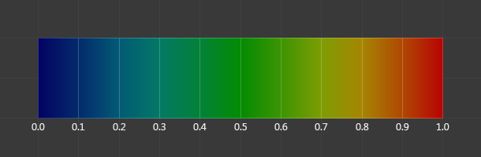
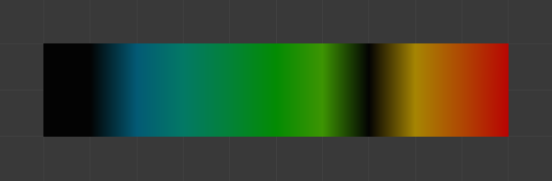

Giới thiệu¶
Vertex Group có thể có số lượng vertex liên kết rất lớn và do đó là một lượng lớn trọng số (một trọng số cho mỗi vertex được gán). Weight Painting là một phương pháp để quản lý lượng lớn thông tin trọng số theo cách rất trực quan.
Nó chủ yếu được dùng để rigging mesh, nơi các vertex group được dùng để xác định mức ảnh hưởng tương đối của bone lên mesh. Nhưng chúng ta cũng dùng nó để điều khiển sự phát xạ của particle, mật độ hair, nhiều modifier, shape key, v.v.

Vertex group trong Chế độ Weight Paint.¶
Bạn có thể vào Chế độ Weight Paint từ bộ chọn chế độ bằng Ctrl-Tab. Mesh object được chọn hiển thị hơi tối với một dải phổ màu cầu vồng. Màu sắc thể hiện trọng số liên kết với từng vertex trong vertex group đang hoạt động. Theo mặc định, xanh dương nghĩa là không có trọng số và đỏ nghĩa là trọng số đầy đủ.
Bạn có thể gán trọng số cho các vertex của object bằng cách vẽ lên nó với các weight brush. Việc bắt đầu vẽ lên mesh sẽ tự động thêm trọng số vào vertex group đang hoạt động (một vertex group mới sẽ được tạo nếu cần).
Vertex Group có thể được quản lý trong pop-over bảng màu ở giữa header.
Bảng mã màu trọng số¶
Các trọng số được hiển thị bằng một dải chuyển sắc dùng hệ màu lạnh/nóng, sao cho các vùng giá trị thấp (trọng số gần 0.0) hiển thị màu xanh dương (lạnh) và các vùng giá trị cao (trọng số gần 1.0) hiển thị màu đỏ (nóng). Các giá trị nằm giữa hiển thị dưới dạng các màu cầu vồng (xanh dương, xanh lá, vàng, cam, đỏ).

Phổ màu và các trọng số tương ứng của chúng.¶
Ngoài bảng mã màu được mô tả ở trên, Blender còn có một ký hiệu hiển thị đặc biệt (dưới dạng tùy chọn) cho các vertex không được tham chiếu: chúng hiển thị màu đen. Nhờ đó bạn có thể thấy cùng lúc các vùng được tham chiếu (hiển thị bằng màu lạnh/nóng) và các vùng không được tham chiếu (màu đen). Điều này rất hữu ích khi bạn tìm lỗi gán trọng số. Xem Viewport Overlays.

Ví dụ về các vertex không được tham chiếu.¶
Ghi chú
Bạn có thể tùy biến các màu trong dải trọng số bằng cách bật Custom Weight Paint Range trong tab Editing của Preferences.
Quy trình làm việc với trọng số đã chuẩn hóa¶
Để dùng cho những việc như biến dạng, các trọng số thường phải được chuẩn hóa, sao cho tất cả trọng số biến dạng được gán vào một vertex cộng lại bằng 1. Modifier Armature trong Blender tự động làm điều này, nên về mặt kỹ thuật không bắt buộc phải bảo đảm trọng số được chuẩn hóa ngay ở giai đoạn vẽ.
Tuy nhiên, dù phức tạp hơn, làm việc với trọng số đã chuẩn hóa có một số ưu điểm, vì nó cho phép dùng một số công cụ được thiết kế riêng cho chúng, và vì khi trọng số đã được chuẩn hóa, việc hiểu mức ảnh hưởng cuối cùng của group hiện tại không đòi hỏi phải biết trọng số trong các group khác trên cùng một vertex.
Các công cụ sau được cung cấp để hỗ trợ làm việc với trọng số đã chuẩn hóa:
- Normalize All
Để bắt đầu làm việc với trọng số đã chuẩn hóa, trước tiên cần chuẩn hóa các trọng số hiện có. Có thể dùng công cụ Normalize All cho việc đó. Nhớ chọn đúng chế độ và tắt Lock Active.
- Auto Normalize
Sau khi các trọng số được chuẩn hóa ban đầu, tùy chọn Auto Normalize có thể được bật để tự động duy trì trạng thái chuẩn hóa trong khi bạn vẽ. Điều này cũng báo cho một số công cụ biết rằng các trọng số được coi là đã chuẩn hóa rồi.
- Khóa vertex group
Bất kỳ vertex group nào cũng có thể bị khóa để ngăn chặn các thay đổi lên nó. Việc này có thể được thực hiện qua biểu tượng khóa trong danh sách vertex group, hoặc bằng cách dùng lựa chọn bone và pie menu khóa.
Cài đặt này ngăn các chỉnh sửa vô tình vào group. Tuy nhiên, vì nó cũng được Auto Normalize tôn trọng, trong quy trình trọng số chuẩn hóa nó còn có ý nghĩa quan trọng hơn là khóa mức ảnh hưởng hiện tại của các bone đã chọn, sao cho khi bạn vẽ các bone khác, trọng số chỉ được phân phối lại giữa các group không bị khóa.
Ở những vị trí chịu ảnh hưởng của nhiều bone, điều này cho phép tinh chỉnh và cân bằng lại trọng số chính xác hơn bằng cách tạm thời tập trung vào một tập con các bone. Việc này còn có thể được hỗ trợ bởi tùy chọn Lock Relative, vốn hiển thị các group không khóa như thể đã được chuẩn hóa lại với các group bị khóa bị xóa đi, khiến chúng trông như thể các group bị khóa không hề tồn tại.
- Multi-Paint
Cuối cùng, tùy chọn Multi-Paint cho phép coi nhiều bone được chọn như thể chúng là một bone, sao cho các thao tác vẽ thay đổi trọng số tổng hợp, giữ nguyên tỷ lệ bên trong nhóm. Kết hợp với khóa, điều này cho phép cân bằng giữa một nhóm bone với phần còn lại, loại trừ nhóm thứ ba có mức ảnh hưởng không bị thay đổi gì do bị khóa.
Về mặt kỹ thuật, tùy chọn này không đòi hỏi quy trình chuẩn hóa, nhưng vì các trọng số chưa chuẩn hóa có thể cộng lại lớn hơn 1, hiển thị trọng số hoạt động tốt nhất khi Auto Normalize được bật.
Mẹo
Ví dụ, khi làm việc với một vòng bone, chẳng hạn miệng hoặc mắt, việc chọn vòng đó với Multi-Paint sẽ lộ ra độ suy giảm (falloff) giữa vòng nói chung với các bone xung quanh, trong khi khóa các bone xung quanh và dùng Lock Relative sẽ hiển thị độ suy giảm giữa các bone bên trong vòng. Nhờ vậy, độ suy giảm hai chiều phức tạp của mỗi bone có thể được xem và chỉnh sửa như hai dải một chiều độc lập.
Blend Modes¶
Blend Modes của brush xác định giá trị trọng số được áp dụng vào vertex group theo cách nào trong khi vẽ.
- Mix:
Trong chế độ trộn này, giá trị Weight xác định trọng số mục tiêu mà cuối cùng sẽ đạt được khi bạn vẽ đủ lâu trên cùng một vị trí của mesh. Còn cường độ xác định bạn cần đặt bao nhiêu nét để đạt trọng số mục tiêu. Lưu ý rằng với cường độ = 1.0, trọng số mục tiêu được vẽ ngay lập tức, còn với Weight = 0.0 thì brush không làm gì cả.
- Add:
Trong chế độ trộn này, giá trị trọng số được chỉ định sẽ được cộng vào trọng số của vertex. Cường độ xác định phần nào của trọng số được cộng vào mỗi nét. Tuy nhiên, brush sẽ không vẽ các giá trị trọng số trên 1.0.
- Subtract:
Trong chế độ trộn này, giá trị trọng số được chỉ định sẽ bị trừ khỏi trọng số của vertex. Cường độ xác định phần nào của trọng số bị loại bỏ mỗi nét. Tuy nhiên, brush sẽ không vẽ các giá trị trọng số dưới 0.0.
- Lighten:
Trong chế độ trộn này, giá trị trọng số được chỉ định được diễn giải là trọng số mục tiêu. Rất giống với chế độ trộn Mix, nhưng chỉ những trọng số dưới trọng số mục tiêu mới bị ảnh hưởng. Các trọng số trên trọng số mục tiêu giữ nguyên.
- Darken:
Chế độ trộn này rất giống với chế độ trộn Lighten. Nhưng chỉ những trọng số trên trọng số mục tiêu mới bị ảnh hưởng. Các trọng số dưới trọng số mục tiêu giữ nguyên.
- Multiply:
Nhân trọng số của vertex với giá trị trọng số được chỉ định. Khá giống với subtract, nhưng lượng trọng số bị loại bỏ bây giờ phụ thuộc vào chính giá trị Weight.
- Blur:
Làm mượt trọng số của các vertex liền kề. Trong chế độ này, Weight Value bị bỏ qua. Cường độ xác định mức độ áp dụng việc làm mượt.